# the function sample_canva() does the work of generating random palettes sample_canva <-function(seed =NULL) {if(!is.null(seed)) set.seed(seed)sample(ggthemes::canva_palettes, 1)[[1]]}
sample_canva()
[1] "#662225" "#b51d0a" "#ead39c" "#7d5e3c"
# sample_cross_matrix is the same idea as sample_data() as it creates a sample random spatial pattern sample_cross_matrix <-function(n =10, seed =NULL) {if(!is.null(seed)) set.seed(seed) mat <-matrix(data =0, nrow = n, ncol = n) mat[sample(n, 1), ] <-1 mat[, sample(n, 1)] <-1return(mat)}sample_cross_matrix()
# using ambient we first need to set the x and y coordsx_coords <-seq(from =0, to =1, length.out =800)y_coords <-seq(from =0, to =1, length.out =800)
# the "canvas" is what we are going to paint on and thus we set the x and y cords# using the function long_grid we can use it to easily convert them to arrays, matrices and raster obejcts that respect the implied spatial grid canvas <-long_grid(x = x_coords, y = y_coords) canvas
#gen_perline(), generates generate random "wavy" patterns and can be thought of the idea as our brush gen_perlin(x =1:5, y =1, frequency = .001, seed =1)
# now with all the above code, we can control the fill aesthetic in a ggpot and create art art <-ggplot(canvas, aes(x, y, fill = paint)) +geom_raster(show.legend =FALSE)
# the function geom_raster() is used for a square grid render # the function ambient::gen*() generates a spatial pattern # the function theme_void() helps remove extraneous elements from the art # the function make_noise_art , take the output from a function and plots it as a raster object and it dose not manipulate or modify that output make_noise_art <-function(generator = gen_perlin, frequency =10, seed =1234,pixels =2000,palette =c("#e5ddc8", "#01949a", "#004369", "#db1f48"), ...) {# define the grid canvas <-long_grid(x =seq(from =0, to =1, length.out = pixels),y =seq(from =0, to =1, length.out = pixels) ) # use the generator to add paint canvas <- canvas |>mutate(paint =generator( x, y, frequency = frequency, seed = seed, ... ) )# use ggplot2 to draw the picture art <- canvas |>ggplot(aes(x, y, fill = paint)) +geom_raster(show.legend =FALSE) +theme_void() +coord_equal() +scale_x_continuous(expand =c(0, 0)) +scale_y_continuous(expand =c(0, 0)) +scale_fill_gradientn(colours = palette)return(art)}
# seed , demonstrates that many spatial patterns can be created make_noise_art(seed =1234)
make_noise_art(seed =1001)
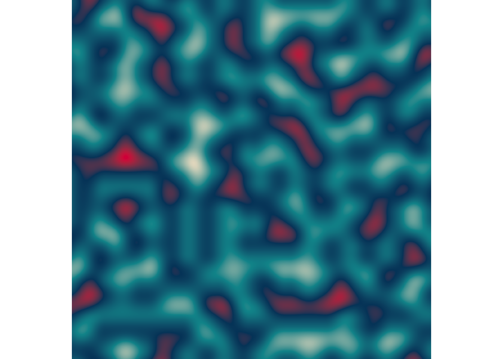
make_noise_art(seed =9999)
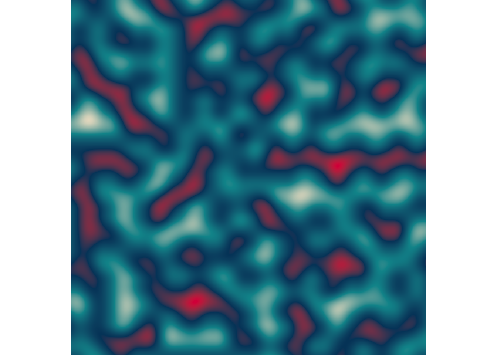
# frequency , demonstrates a sysematic variation make_noise_art(frequency =10)
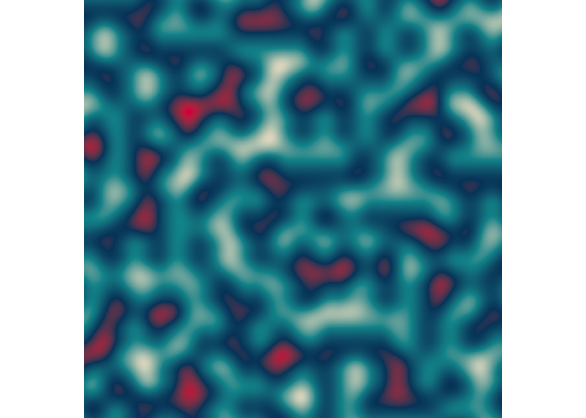
make_noise_art(frequency =20)
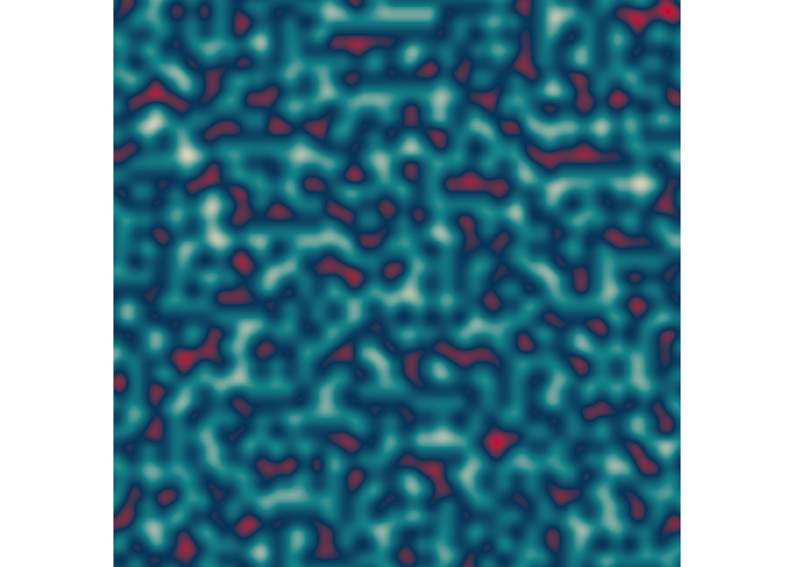
make_noise_art(frequency =90)
# a palette demonstrates a difference of colors make_noise_art(palette =c("white", "black"))
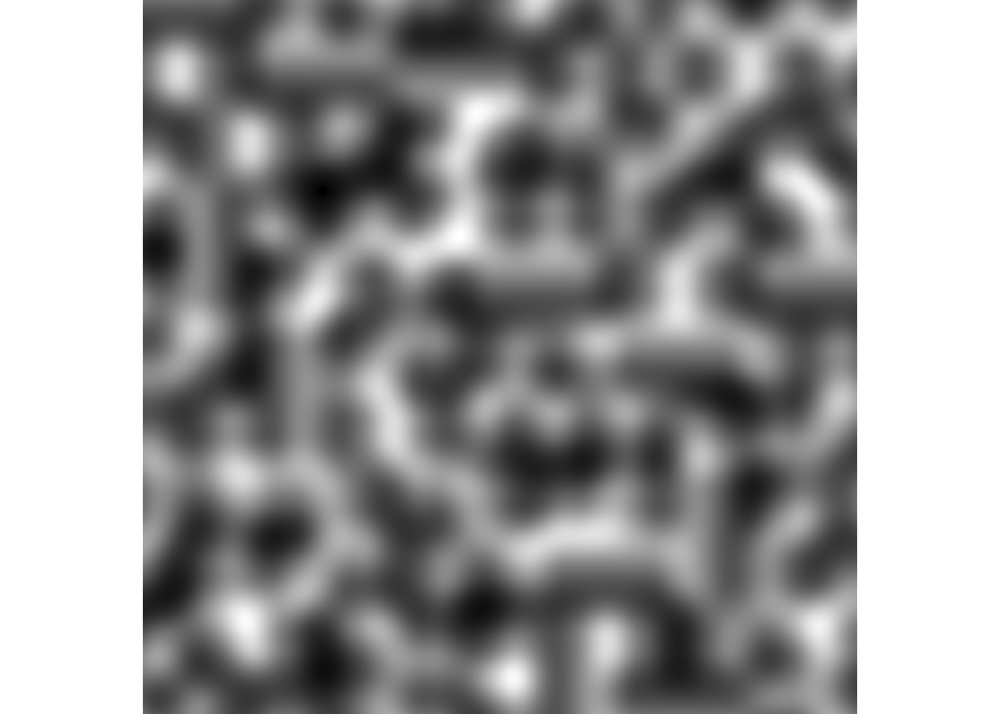
make_noise_art(palette =sample_canva(seed =123))
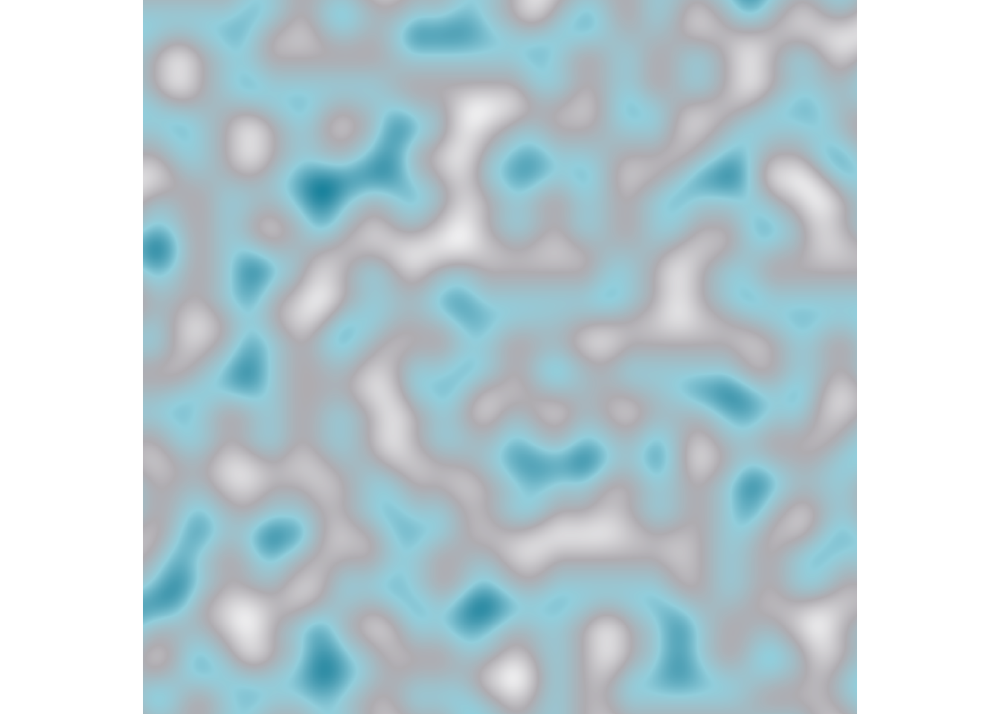
make_noise_art(palette =sample_canva(seed =456))
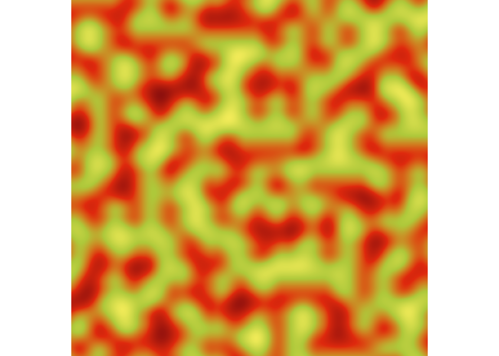
# using the command generator, the plot can be designed in many different ways# personal favorite would be the gen_worley#make_noise_art(generator = gen_perlin)make_noise_art(generator = gen_worley)
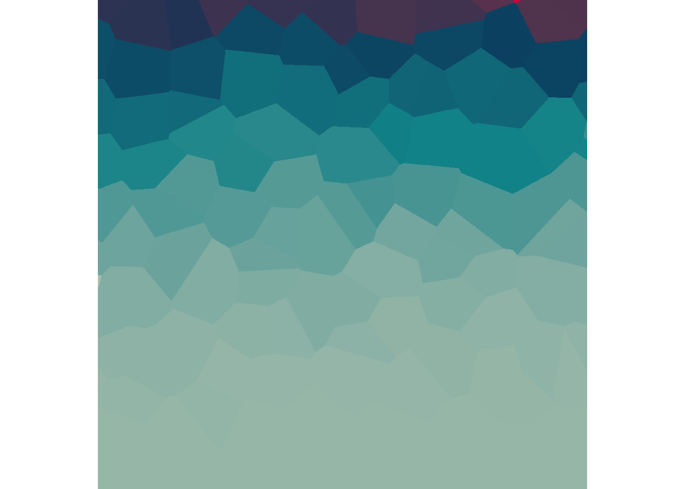
#make_noise_art(generator = gen_waves)
dplyr is best friend
# by creating a blank_canvas, we can reuse as the starting point for our later pieces blank_canvas <-long_grid(x =seq(from =0, to =1, length.out =2000),y =seq(from =0, to =1, length.out =2000))
# this code below, is good but we can simplfy it later and use dplyrplot_painted_canvas <-function(canvas, palette =NULL) {if(is.null(palette)) { palette <-c("#e5ddc8","#01949a","#004369","#db1f48") } canvas %>%ggplot(aes(x, y, fill = paint)) +geom_raster(show.legend =FALSE) +theme_void() +coord_equal() +scale_x_continuous(expand =c(0, 0)) +scale_y_continuous(expand =c(0, 0)) +scale_fill_gradientn(colours = palette)}
# this code below is better and we can use dplyr, data manupulation grammer in a more sophistcated wayblank_canvas %>%mutate(paint =gen_perlin(x, y, frequency =90, seed =1234))%>%plot_painted_canvas()
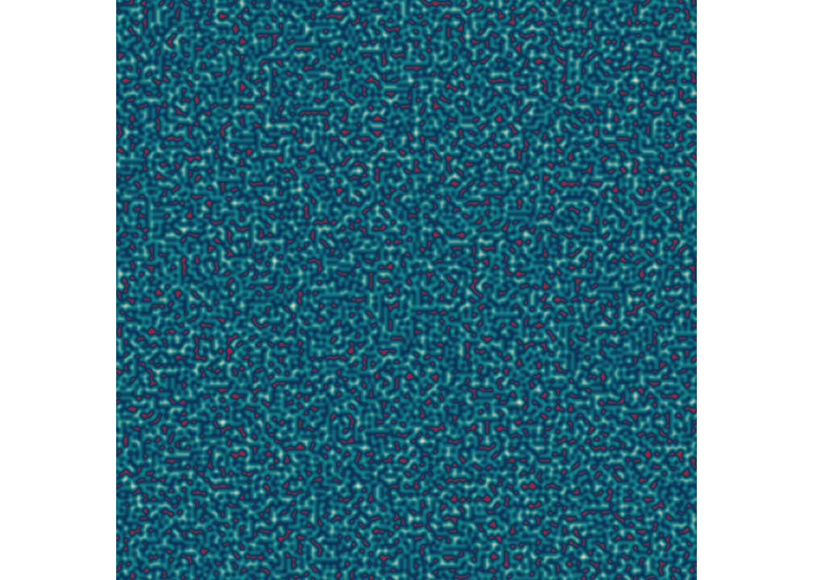
# this plot, displays "noise"blank_canvas %>%mutate(lf_noise =gen_simplex(x, y, frequency =1, seed =1234),mf_noise =gen_simplex(x, y, frequency =20, seed =1234),hf_noise =gen_simplex(x, y, frequency =99, seed =1234),paint = lf_noise + mf_noise + hf_noise ) %>%plot_painted_canvas()
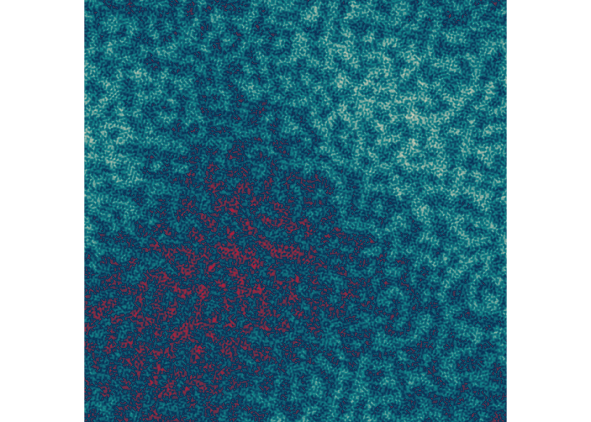
# the gate command, changed the display of the plot blank_canvas %>%mutate(lf_noise =gen_simplex(x, y, frequency =1),mf_noise =gen_simplex(x, y, frequency =20),hf_noise =gen_simplex(x, y, frequency =99),gate =gen_spheres(x, y, frequency =10) |>normalise(),paint = lf_noise + (1+ mf_noise) * (gate >= .1& gate < .6) + (1+ hf_noise) * (gate >= .05) ) %>%plot_painted_canvas(palette =sample_canva(seed =2))
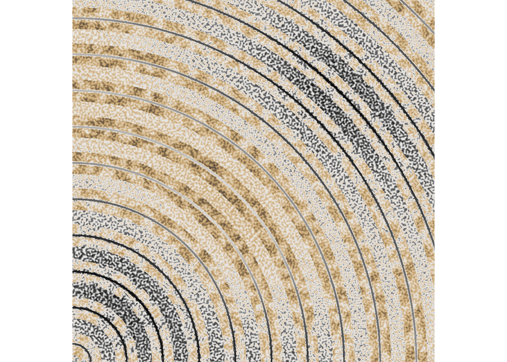
blank_canvas %>%mutate(lf_noise =gen_simplex(x, y, frequency =1),mf_noise =gen_simplex(x, y, frequency =20),hf_noise =gen_simplex(x, y, frequency =99),gate =gen_simplex(x, y, frequency =10) |>normalise(),paint = lf_noise + (2+ mf_noise) * (gate >= .2& gate < .8) + (2+ hf_noise) * (gate >= .1) ) %>%plot_painted_canvas(palette =sample_canva(seed =3))
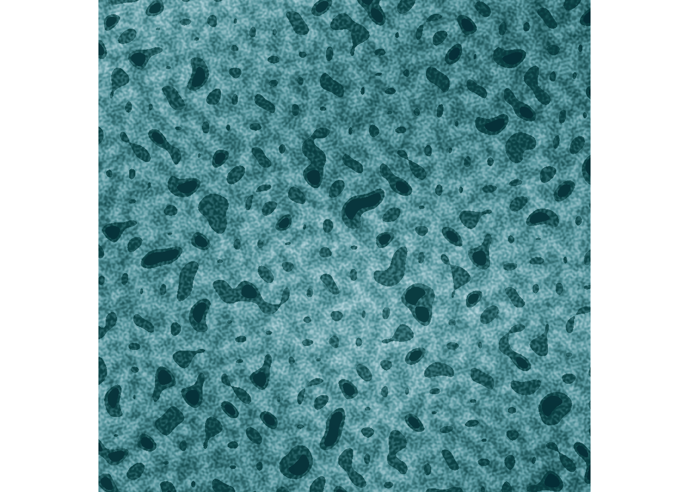
Fractals
# gen_sin() is a function that generates sinusodial patterns with a particular frequencygen_sin <-function(x, frequency, ...) {sin(x * frequency)}
#fbm() meas fractional Brownian Motionfbm <-function(base, new, strength, ...) { base + new * strength}
# the code below, displays a creation of a fractal absed on the gen_sin() generator using fbm() as a fractal function fracture(x =1:20, noise = gen_sin, fractal = fbm, octaves =8#octave 8 specifies the number of times to apply the generator and fractal function )
# by using fractal_art() we can simplify the code fractal_art <-function(fractal, generator, palette =NULL, ...) { blank_canvas |>mutate(paint =fracture(noise = generator,fractal = fractal,x = x, y = y, ... ) ) |>plot_painted_canvas(palette = palette)}
# fractal_art, allows everythign to be very simplal #fractal_art(fbm, gen_waves, seed = 1, octaves = 1)#fractal_art(fbm, gen_waves, seed = 1, octaves = 2)fractal_art(fbm, gen_waves, seed =1, octaves =20)
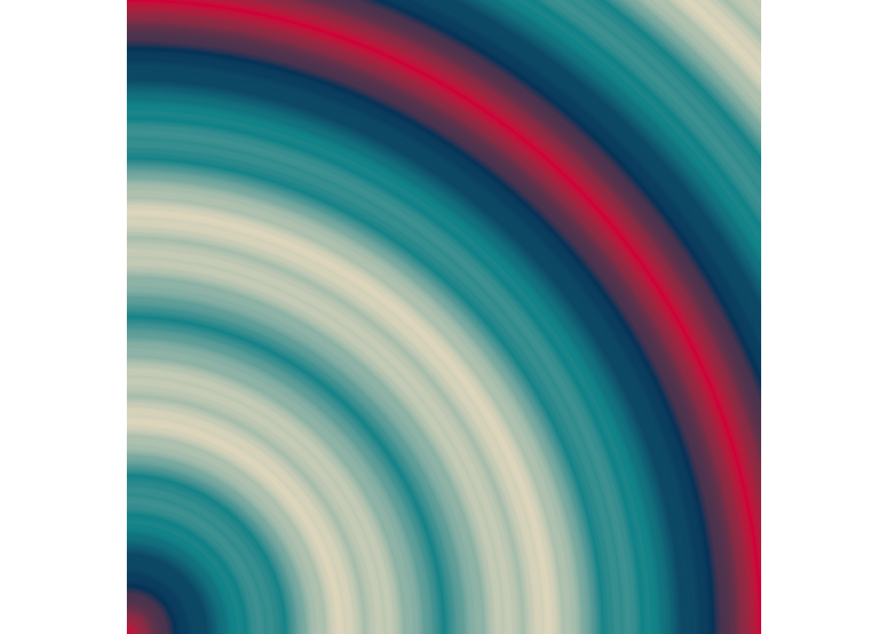
# simplex noise code blank_canvas%>%mutate(paint =gen_simplex(x, y, seed =2))%>%plot_painted_canvas()
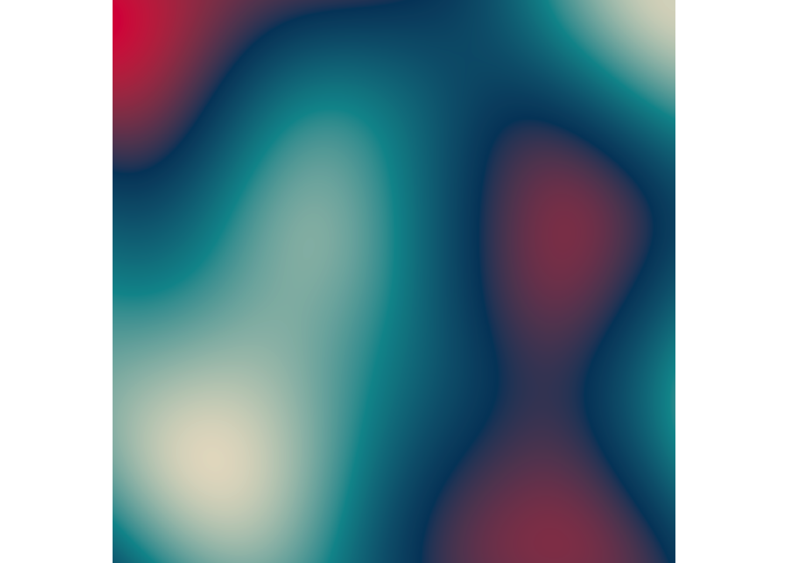
# below is combining the functions gen_simplex() and fbm() #fractal_art(fbm, gen_simplex, seed = 2, octaves = 1)#fractal_art(fbm, gen_simplex, seed = 2, octaves = 2)fractal_art(fbm, gen_simplex, seed =2, octaves =20)
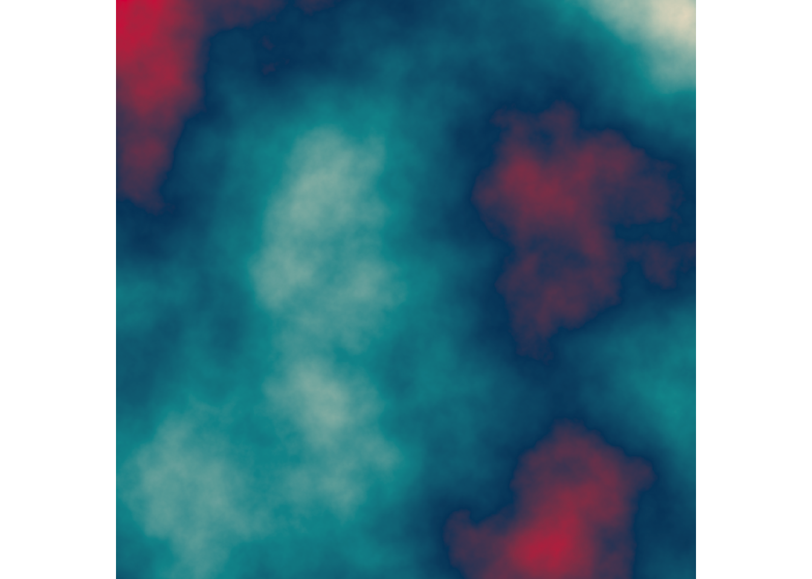
# by modifying the gain and frequency, we use the function ridged()gf <-function(x) x * .8fractal_art(ridged, gen_simplex, seed =2, octaves =1, gain = gf)
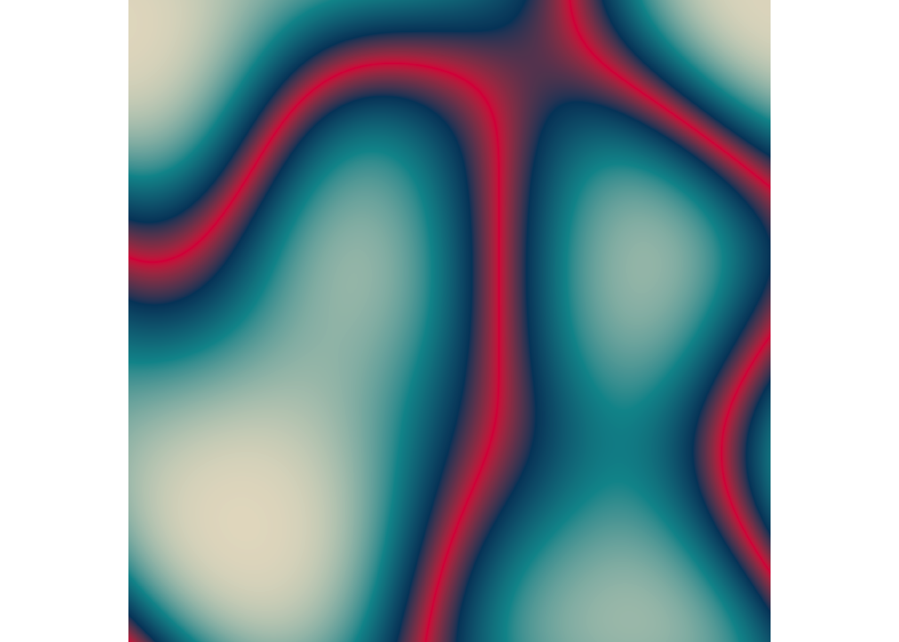
fractal_art(ridged, gen_simplex, seed =2, octaves =2, gain = gf)
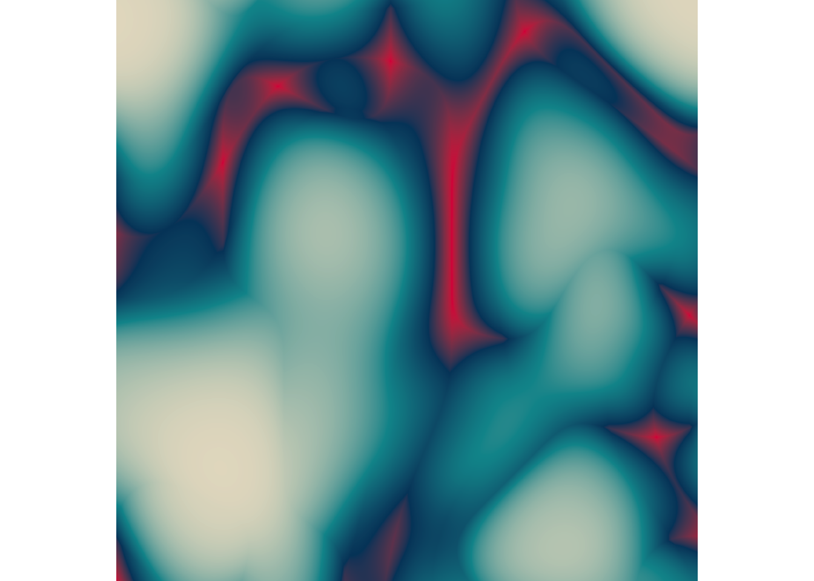
fractal_art(ridged, gen_simplex, seed =2, octaves =20, gain = gf)
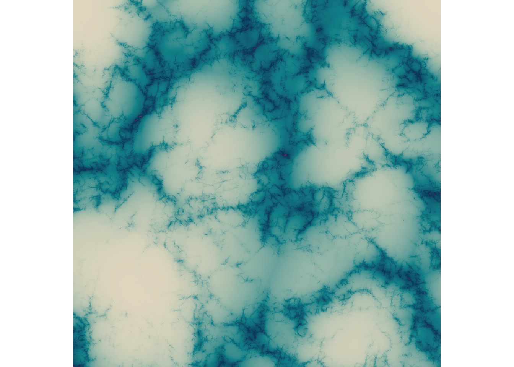
# the code below deomstrates a basic Worley noise pattern blank_canvas %>%mutate(paint =gen_worley(x, y, seed =6)) %>%plot_painted_canvas()
# the command billow, creates a "kaleidoscopic" looking patternfractal_art(billow, gen_worley, seed =6, octaves =1)
# by the doing "value = "distance" "blank_canvas %>%mutate(paint =gen_worley(x, y, seed =6, value ="distance")) %>%plot_painted_canvas()
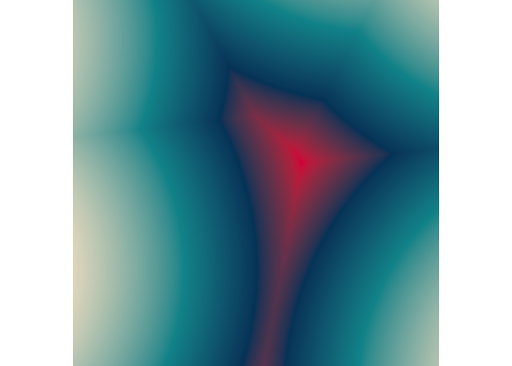
#fractal_art(billow, gen_worley, seed = 6, octaves = 1, value = "distance")#fractal_art(billow, gen_worley, seed = 6, octaves = 3, value = "distance")fractal_art(billow, gen_worley, seed =6, octaves =8, value ="distance")
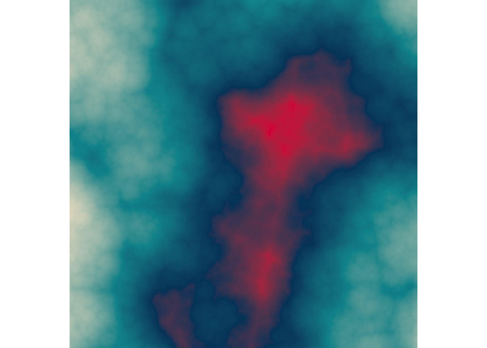
# this code belwo is creating a two dimensional gen_scope <-function(x, y, ...) { worley_cell <-gen_worley(x, y, value ="cell", ...) worley_dist <-gen_worley(x, y, value ="distance", ...)return(normalise(worley_cell) +5*normalise(worley_dist))}pal <-sample_canva(seed =2)blank_canvas %>%mutate(paint =gen_scope(x, y, seed =9)) %>%plot_painted_canvas(palette = pal)
# using the gen_gate() function allows the use of "gating" mechanism gen_gate <-function(x, y, frequency, ...) { lf <-gen_simplex(x, y, frequency = frequency, ...) mf <-gen_simplex(x, y, frequency = frequency *20, ...) hf <-gen_simplex(x, y, frequency = frequency *99, ...) gate <-gen_simplex(x, y, frequency = frequency *10, ...) gate <-normalise(gate) paint <- lf + (mf +2) * (gate >= .2& gate < .8) + (hf +2) * (gate >= .1)return(paint)}pal <-sample_canva(seed =3)fractal_art(billow, gen_gate, palette = pal, seed =9, octaves =1)
# below is just creating grid smol_grid <-long_grid(x =1:20, y =1:20)ggplot(smol_grid) +geom_point(aes(x, y), colour ="white") +theme_void() +coord_equal()
#gen_simplex(), allows to represent the size of the plot marker smol_simplex <- smol_grid%>%mutate(z =gen_simplex(x, y, seed =1, frequency = .1)) smol_simplex %>%ggplot(aes(x, y, size = z)) +geom_point(colour ="white", show.legend =FALSE) +theme_void() +coord_equal()
smol_simplex %>%ggplot(aes(x, y, z = z)) +geom_contour_filled(show.legend =FALSE, bins =10) +theme_void() +coord_equal()
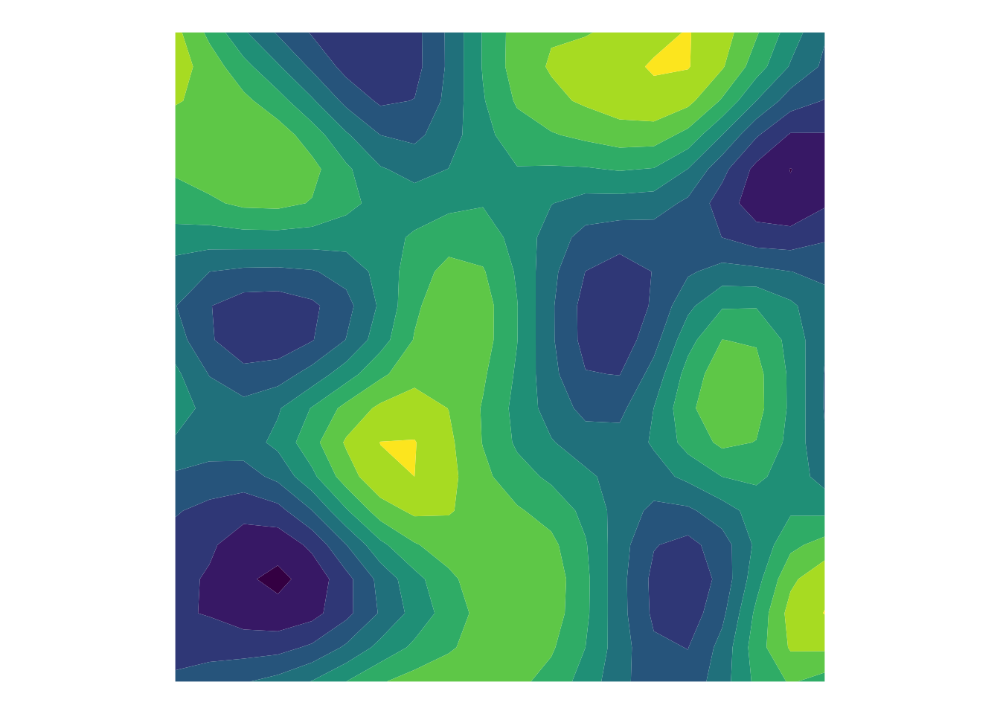
#using the eps, we can use the slope of both x and y slopes eps <- .001smol_curl <- smol_grid |>mutate(x_add =gen_simplex(x + eps, y, seed =1, frequency = .1),x_sub =gen_simplex(x - eps, y, seed =1, frequency = .1),y_add =gen_simplex(x, y + eps, seed =1, frequency = .1),y_sub =gen_simplex(x, y - eps, seed =1, frequency = .1),x_slope = (x_add - x_sub) / (2* eps), y_slope = (y_add - y_sub) / (2* eps),x_curl =-y_slope, y_curl = x_slope)
ggplot(smol_curl) +geom_segment(mapping =aes(x = x, y = y, xend = x + x_slope *2, yend = y + y_slope *2 ), colour ="white", arrow =arrow(length =unit(0.1, "cm")) ) +theme_void() +coord_equal()
ggplot(smol_curl) +geom_segment(mapping =aes(x = x, y = y, xend = x + x_curl *2, yend = y + y_curl *2 ), colour ="white", arrow =arrow(length =unit(0.1, "cm")) ) +theme_void() +coord_equal()
# creating the data frame for the plot belowcurl <-curl_noise(generator = gen_simplex,seed =1,frequency = .1,x = smol_grid$x, y = smol_grid$y)as_tibble(curl)
# curl data frame contains x and y columns that specify the curl values of each point smol_grid %>%mutate(x2 = x + curl$x *2,y2 = y + curl$y *2 ) |>ggplot() +geom_segment(mapping =aes(x, y, xend = x2, yend = y2),colour ="white", arrow =arrow(length =unit(0.1, "cm")) ) +theme_void() +coord_equal()
# the update_curl function takes the current_state as an input and computes the curl at all points in a grid and then returns a new set of x and y values to those of the x and y values update_curl <-function(current_state, step_size = .0005, ...) { curl <-curl_noise(x = current_state$x, y = current_state$y, ... ) next_state <- current_state |>mutate(x = x + curl$x * step_size,y = y + curl$y * step_size,time = time +1 )return(next_state)}
coords <-seq(0, 1, length.out =50)time_1 <-long_grid(x = coords, y = coords) %>%mutate(id =row_number(), time =1)time_1
# the final plot of a curl plot dat12 <-bind_rows(time_1, time_2)dat123 <-bind_rows(time_1, time_2, time_3)dat12 %>%ggplot(aes(x, y, group = id)) +geom_path(colour ="white") +theme_void() +coord_equal()
dat123 %>%ggplot(aes(x, y, group = id)) +geom_path(colour ="white") +theme_void() +coord_equal()
Curl of a fractal pattern
#the curl_noise() can be applied to any generator, such as the function fracture()curl_data <-function( data, iterations =50,step_size = .001, ...) { update <-function(current_state, iteration, ...) { curl <-curl_noise(x = current_state$x, y = current_state$y,generator = fracture, ... ) next_state <- current_state |>mutate(x = x + curl$x * step_size,y = y + curl$y * step_size,time = time +1 )return(next_state) } data |>mutate(id =row_number(), time =1) |>accumulate(1:iterations, update, .init = _, ...) |>bind_rows()}curl_art <-function(...) {curl_data(...) |>ggplot(aes(x, y, group = id)) +geom_path(colour ="white") +theme_void() +coord_equal() }